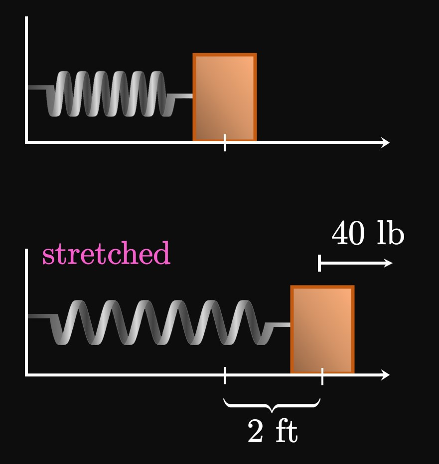

A fruit bowl contains double the number of apples as bananas.
If the bowl has \(39\) total fruits that are either apples or bananas,
then many of each fruit does it have?
April has \(\$20\) to purchase \(7\) flowers for her friends.
Roses cost \(\$2\) each, and lilies cost \(\$4\) each.
How many of each flower should April purchase?
At a movie theater, a kid's ticket costs \(\$7\) and an adult's ticket costs \(\$14.\)
If \(30\) tickets are sold and the revenue from ticket sales is \(\$350,\)
then determine how many of each ticket is sold.
In a wallet, \(14\) bills of cash have a combined value of \(\$50.\)
If the wallet contains exclusively
one-dollar bills and five-dollar bills,
then determine how many of each bill is in the wallet.
A \(100\)-point exam has \(16\) questions,
each worth either four or seven points.
Determine how many four-point questions and seven-point questions are on the exam.
Hooke's Law states that the force required to stretch a spring past its natural length
equals the stretched length multiplied by the spring constant,
a measure of the spring's stiffness.
(This law is an excellent approximation if the stretched length is not too large.)
A force of \(40\) pounds is required to stretch a spring by \(2\) feet past its natural
length (Figure 10).
What force is required to stretch the spring by \(4\) feet past its natural length?
